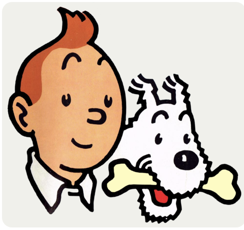

Current responsibilities
I'm a journalist. I joined several international expeditions with my smart dog Milou.
Some Adventures
- L'Oreille cassée
- L'ile Noire
- Le Sceptre d'Ottokar
- Le Crabe aux pinces d'or
I'm a journalist. I joined several international expeditions with my smart dog Milou.